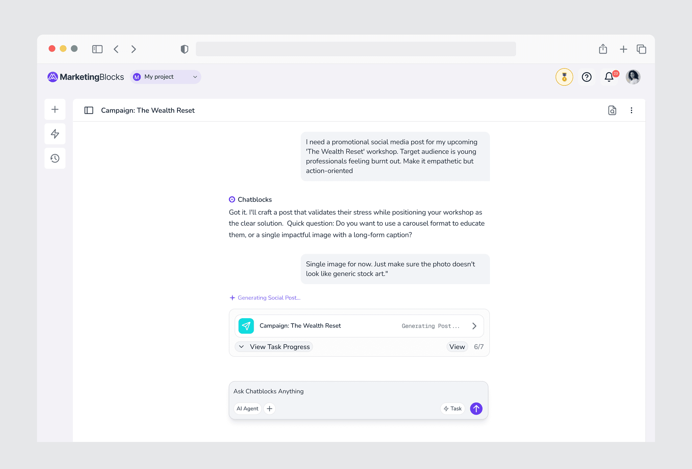
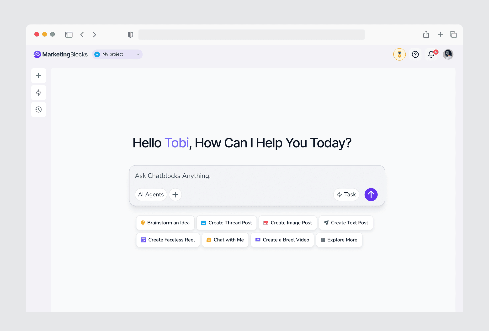
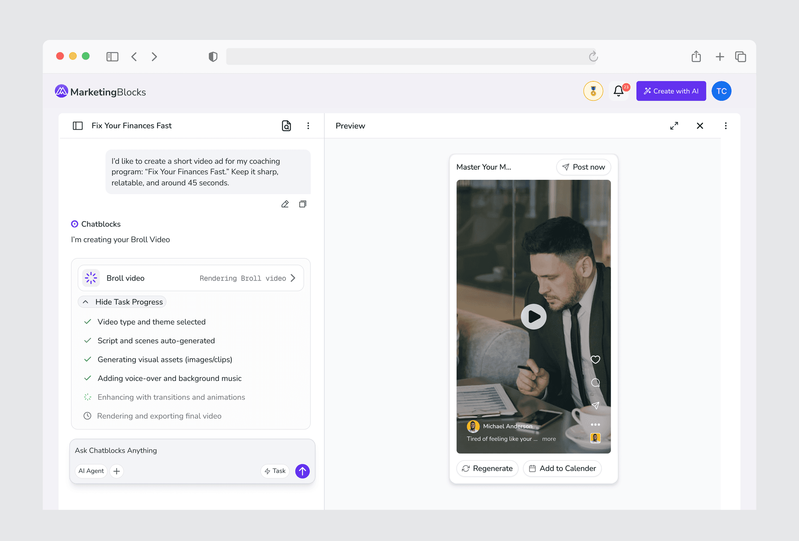
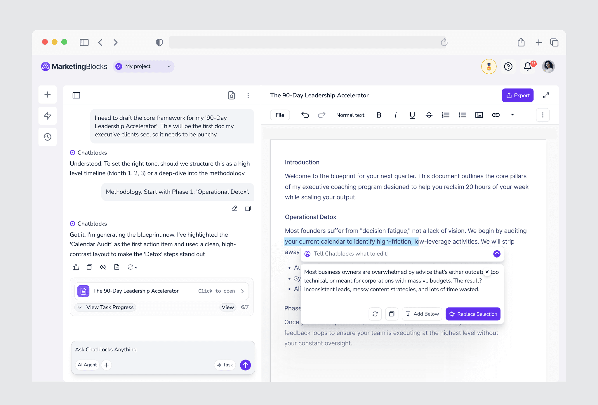
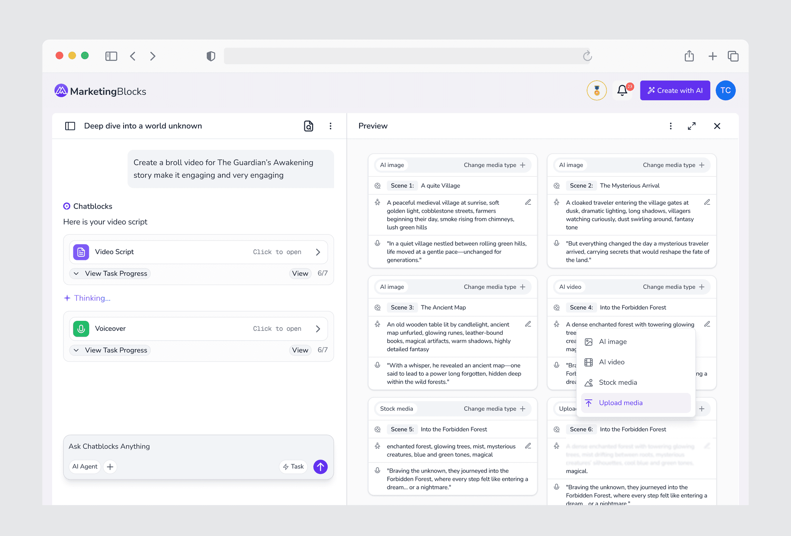
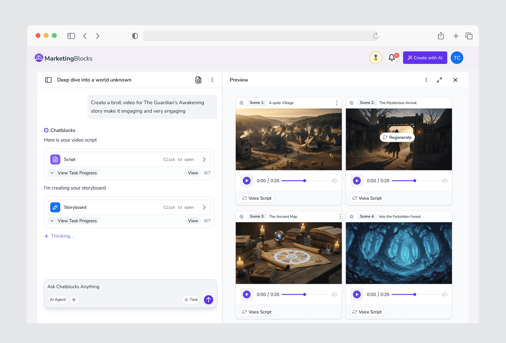
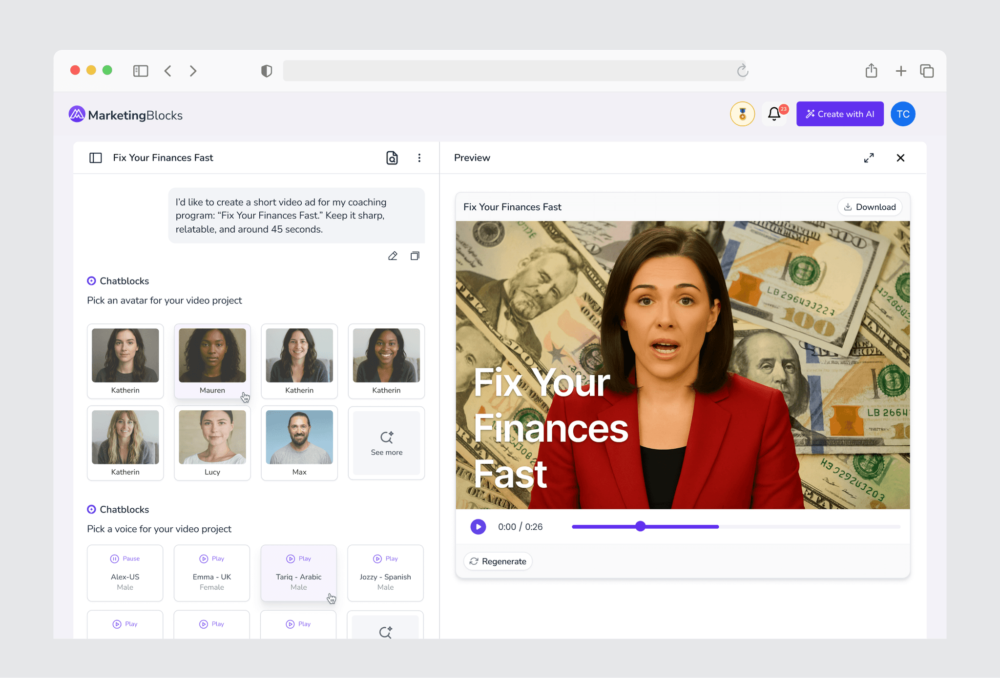
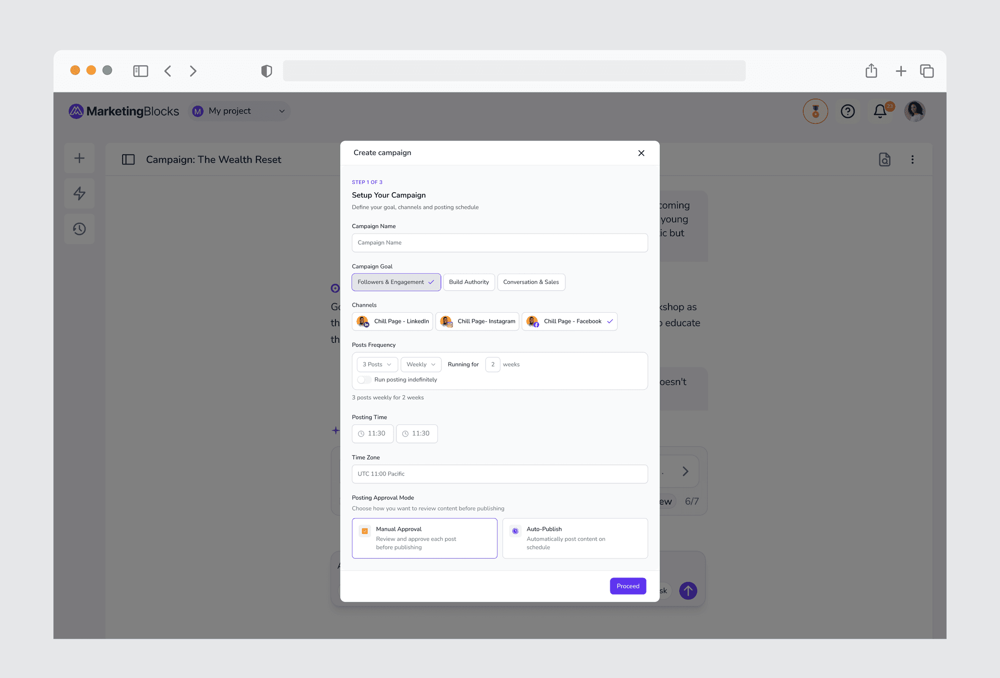
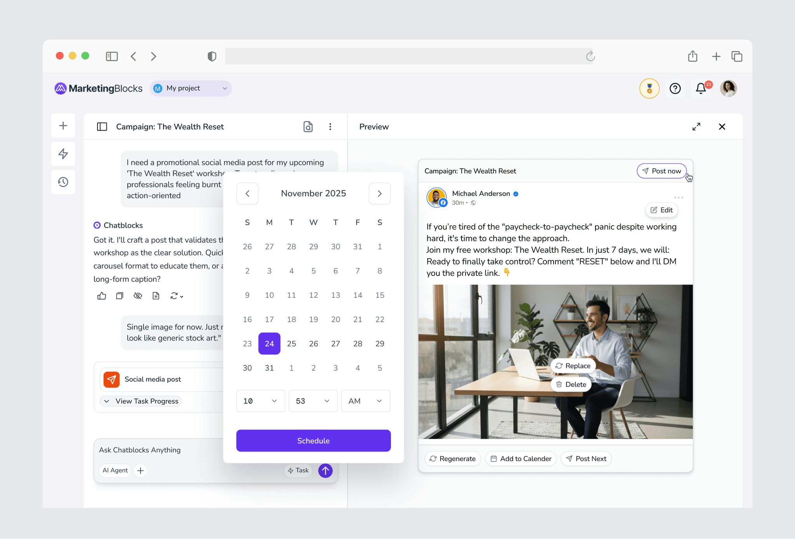

The Challenge
Users were not failing because they could not create content.
They were failing because the path from creation to publishing was fragmented.
MarketingBlocks AI had individual AI tools for copywriting, video creation, design, and campaign assets. Each tool worked well on its own, but users still had to connect the workflow themselves.
To launch a single campaign, a user had to move through several disconnected steps:
research the campaign idea
generate copy in one tool
create visuals or videos in another tool
download the assets
manually upload and reformat the content across social platforms
schedule or publish each post separately
This created a lot of context switching.
For founders and marketers, the real goal was not just to create an asset. The goal was to get a campaign live. But the product experience still placed too much responsibility on the user to move work from one stage to another.
The challenge was to design an interface that could connect the full workflow from research to creation to distribution.
How might we help users move from idea to published campaign without jumping between multiple tools?
The Solution
I designed Chatblocks as an agentic workspace where users could research, create, edit, approve, and publish content through one conversational flow.
The goal was not to build another chatbot. It was to create a guided workspace where the AI could understand the user’s goal, suggest the next step, generate the right asset, and keep the workflow moving until the content was ready to publish.
Instead of asking users to choose between multiple tools, the experience started with one simple prompt:
“What do you want to create?”
From there, the AI could guide users through research, content ideas, captions, visuals, videos, landing pages, and publishing.

Intent-Driven Starting Point
A blank chat box can feel flexible, but it can also leave users unsure of where to begin.
I designed guided entry points that helped users start with clear content goals instead of facing an empty conversation. Users could begin with actions like creating a campaign, generating a video, writing a social post, repurposing content, or building a landing page.
This helped turn vague ideas into structured creative directions.
The user did not need to know which MarketingBlocks tool to open first. They only needed to describe what they wanted to achieve, and the AI could guide the next step.

Visible AI Progress
One of the biggest trust issues with AI products is that users often do not know what is happening while the system is working.
A generic loading state can make the product feel slow, broken, or unpredictable, especially when the AI is performing multiple steps in the background.
I designed live progress feedback that showed what the agent was doing in real time.
Instead of simply saying “generating,” the interface could show specific steps such as:
Researching your audience
Generating content angles
Writing the script
Selecting stock footage
Creating the voiceover
Preparing your final asset
This made the AI feel more transparent. Users could see that the system was not stuck. It was actively working through the campaign workflow.

In-Context Editing:
AI-generated content is rarely perfect on the first try.
Users may like the direction of an output, but still need to adjust the tone, script, caption, image, avatar, voiceover, or platform format.
Instead of forcing users to restart the process or open another tool, I designed a contextual editing sidebar that allowed them to refine outputs without leaving the conversation.
For example, after generating a video, a user could update the script, swap the avatar, change the voiceover, or adjust the visual style while the chat still retained the full campaign context.
This gave users more control without breaking the workflow.
The AI could generate quickly, but the user could still direct, correct, and shape the final result.




Approval & Publishing Flow
Because Chatblocks could generate multiple assets in sequence, the workflow needed clear moments where users could review and approve before the AI moved forward.
I designed approval points into the experience so the agent would not continue too far without confirmation.
For example, after generating a campaign direction, landing page, caption, or video concept, the user could review the output, request changes, approve it, and then allow the AI to continue to the next step.
This helped balance automation with control.
The AI could move fast, but the user still had the final say before content moved toward publishing.
The bigger shift was that Chatblocks was designed beyond content generation. Users could move from research to asset creation, from editing to approval, and from approval to publishing without downloading files, switching tabs, or manually moving content across different tools.
Chatblocks became more than a content generator. It became an execution workspace for getting campaigns live.


Outcome:
Chatblocks connected MarketingBlocks’ separate AI tools into one guided agentic workflow.
The experience helped users move from idea to campaign output with less context switching, fewer manual steps, and clearer control over the AI process.
Instead of creating assets one by one, users could manage the workflow like a creative director: giving direction, reviewing outputs, making edits, and approving content before publishing.
The result was a faster and more complete content workflow.
Users were no longer just generating assets. They were moving campaigns toward execution.
Key results:
Connected research, creation, editing, approval, and publishing into one workflow
Reduced the need to move between multiple AI tools
Made the agent’s work more visible through live progress feedback
Improved user control through contextual editing and approval points
Reduced manual steps between asset generation and publishing
Helped users move from idea to campaign output faster
Users who used Chatblocks posted 2.5x more frequently than users relying on the manual workflow